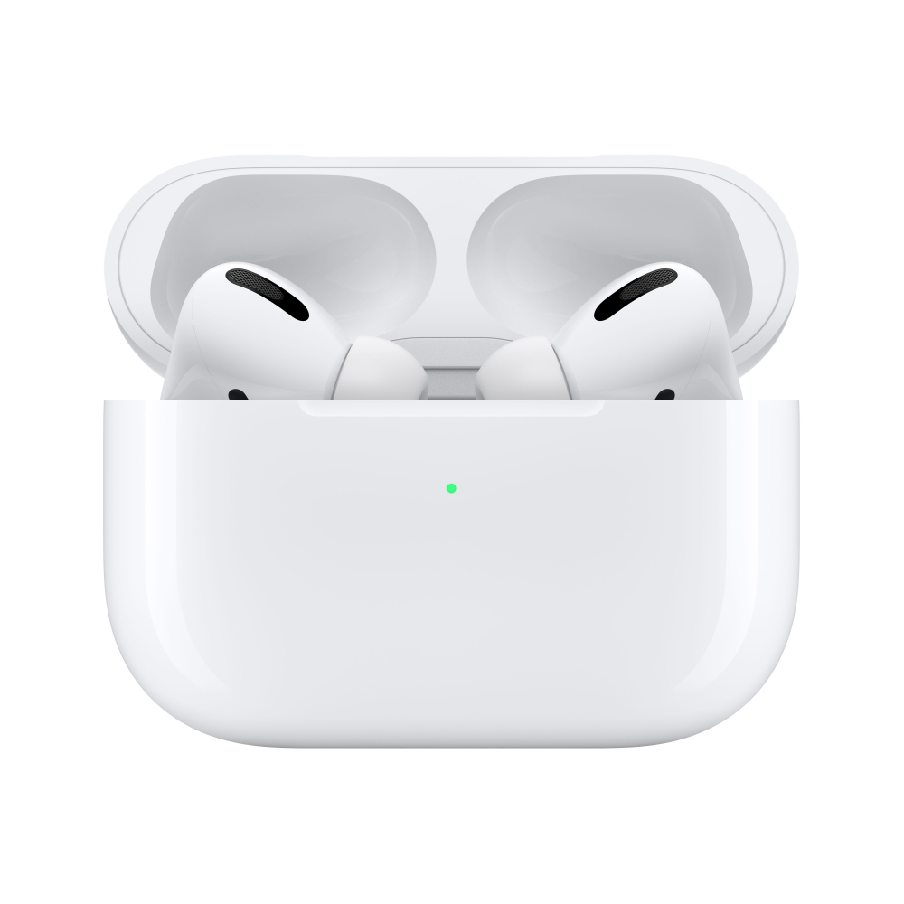

Apple AirPods Pro
RM 858.00
Description
AirPods Pro feature Active Noise Cancellation for immersive sound. Transparency mode for hearing the world around you. They’re sweat and water resistant,1 and have a customisable fit for all-day comfort.
- Active Noise Cancellation blocks outside noise, so you can immerse yourself in music
- Transparency mode for hearing and interacting with the world around you
- Spatial audio with dynamic head tracking places sound all around you
- Adaptive EQ automatically tunes music to your ears
- Three sizes of soft, tapered silicone tips for a customisable fit
- Force sensor lets you easily control your entertainment, answer or end calls, and more
- Sweat and water resistant
- More than 24 hours of total listening time with the MagSafe Charging Case
- Effortless setup, in-ear detection and automatic switching for a magical experience
- Easily share audio between two sets of AirPods on your iPhone, iPad, iPod touch or Apple TV